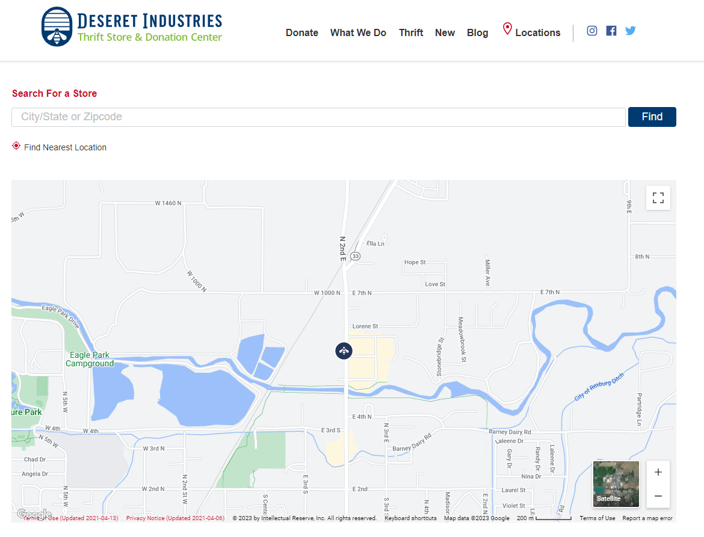

Visual Hierarchy
Brigham Young University Idaho
Visual Hierarchy says things should be organized according to importance and that the desired elements should stand out. The BYU-Idaho Student page does this by arranging the focal point to be the Four big buttons on the page.
Hick's Law
Deseret Industries
Hick's Law has to do with the time it takes a person to make a decision. By having minimal options one can decrease the time it takes someone to make a decision. The Deseret Industries website accomplishes this by having minimal things to do on the page.
Fitts Law
Church of Jesus Christ of Latter Day Saints
Fitts Law says that the time it takes to point to a target depends on its size and distance. You would think this would be intuitive that if something is closer to you and takes up more space it takes less time to point to. Wonder what we're missing that is supposedly intuitive. Anyway the Church website demonstrates this by making a giant button for General Conference.